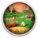

 Haven Park
Detalles
 |
|
| Tiempo de juego | No Jugado |
| Última actividad | Nunca |
| Añadido | 15/07/2023 21:20:38 |
| Modificado | 15/07/2023 21:24:49 |
| Estado de finalización | Not Played |
| Librería | Gog |
| Fuente | GOG |
| Plataforma | PC (Windows) |
| Fecha de lanzamiento | 04/08/2021 |
| Puntuación de la Comunidad | 70 |
| Puntuación de la Crítica | 80 |
| Puntuación de usuario | |
| Género | Action Exploration Role-playing |
| Desarrollador | Fabien Weibel |
| Editor | Fabien Weibel, Mooneye Studios |
| Característica | Achievements Cloud Saves Controller support Single Player |
| Enlaces | Foro Página de la tienda PCGamingWiki |
| Tag | Exploration family-friendly indie nature Puzzle Relaxing Short Third Person Top-Down |
Descripción
"I'm getting older, my dear, and I'm not able to take care of the park any longer... Will you help me bring the life back into this place?"
Be Flint, who is doing his very best to keep his grandma's park up and running and make it a place for the campers to enjoy. Learn the camper's wishes and build whatever their hearts desire to attract even more quirky characters and look forward to whimsical conversations and quests.
Get to know the campers and and learn more about the old stories surrounding the forest. Did someone mention a lost treasure?
Haven Park is a place to relax, to enjoy and to make your own!
Be Flint, who is doing his very best to keep his grandma's park up and running and make it a place for the campers to enjoy. Learn the camper's wishes and build whatever their hearts desire to attract even more quirky characters and look forward to whimsical conversations and quests.
Get to know the campers and and learn more about the old stories surrounding the forest. Did someone mention a lost treasure?
Haven Park is a place to relax, to enjoy and to make your own!
Key Features
- Explore a tiny and peaceful open world and build cozy campsites at your own pace
- Plenty of quests and a heartfelt story keep you busy for 2-4 hours with many little secrets to uncover
- Learn new skills that help you make the campers even happier
- Meet lots of charming characters and learn their needs to make them fall in love with Haven Park